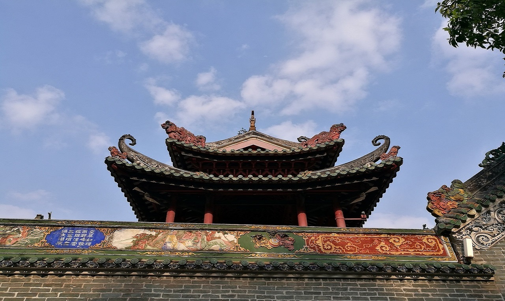
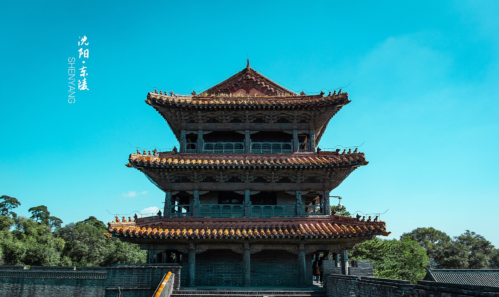

江南好,
风景旧曾谙
这首诗，总是把人们的思绪牵到风景如画的江南。这里河湖交错、如诗如画。

澹泊敬诚，
澹泊敬诚，
宁静致远
以山环水、以水绕岛，布局运用中国传统造园手法，组成中国神话传说中的神仙世界的构图。

中国
中国
古建筑之旅
精选全国最具价值、最具特色的古镇、古村、古民居，古代建筑群，以当地的建筑元素为主体，进行功能性、历史性、溯源性的解读。
穿墙透壁，
剖视古建筑
这首诗，总是把人们的思绪牵到风景如画的江南。这里河湖交错、如诗如画。